Дыхание микроорганизмов
У микроорганизмов существует 2 типа дыхания: аэробное и анаэробное. В результате дыхания образуется
энергия.
При аэробном дыхании происходит окисление различных веществ при использовании молекулярного
кислорода:
Окисление углеводов
Выделяют полное и неполное окисление.
При полном окислении получается углекислый газ и вода.
Суммарное уравнение реакции выглядит так:
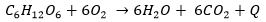
Неполное окисление возникает при избытке углеводов.
Конечными продуктами этого окисления являются яблочная, лимонная, щавелевая, янтарная и другие
органические кислоты.
Окисление аммиака
У нитрифицирующих бактерий аммиак окисляется до азотной кислоты:
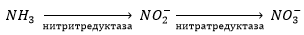
Окисление железа
Железобактерия Thiobacillus ferrooxidans окисляет двухвалентное железо до трёхвалентного:
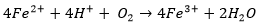
Окисление водорода
Водородные бактерии (Hydrogenobacter thermophilus, Helicobacter pylori) получают энеригию в результате
окисления водорода:
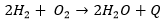
Анаэробное дыхание осуществляется без участия молекулярного кислорода.
Различают несколько типов анаэробного дыхания:
Нитратное дыхание
Широко растространены денитрифицирующие бактерии, восстановливающие нитраты до молекулярного азота или
оксидов азота.
Среди эубактерий способностью к денитрификации обладают грамотрицательные протеобактерии родов
Pseudomonas,
Alcaligenes, Paracoccus, Hyphomicrobium и Thauera, а также некоторые представители грамположительных
бактерий рода
Bacillus.
Проходит в 4 этапа:
1. Восстановление нитрата до нитрита
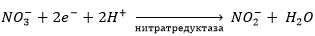
2. Восстановление нитрита до оксида азота
 3. Восстановление оксида азота до закиси азота
3. Восстановление оксида азота до закиси азота
 4. Восстановление закиси азота в молекулярный азот
4. Восстановление закиси азота в молекулярный азот
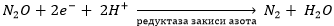
Электрон-транспортную цепь денитрификации можно представить следующим образом:
 Суммарная реакция денитрификации:
Суммарная реакция денитрификации:
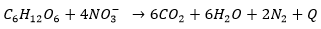
Сульфатное дыхание
Сульфатвосстанавливающие бактерии (Desulfotomaculum, Desulfosarcina, Desulfonema) осуществляют
восстановление сульфатов
до сероводорода.
Проходит в несколько этапов:
1. Активирование сульфата (образование аденозинфосфосульфата и пирофосфата)
 2. Восстановление до сульфита
2. Восстановление до сульфита
 3. Восстановление до сульфида (два способа)
3. Восстановление до сульфида (два способа)
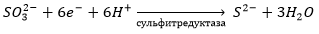
или

Сульфатвосстанавливающие бактерии играют большую роль в коррозии металлов - при их наличии коррозия
происходит даже в безкислородной среде:
1. Окисление железа
 2. Восстановление сульфата
2. Восстановление сульфата
 3. Образование сульфида железа
3. Образование сульфида железа
 Суммарная реакция:
Суммарная реакция:
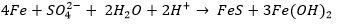
Карбонатное дыхание
Метаногенные бактерии (Methanobacterium, Methanococcus, Methanospirillum) восстанавливают углекислый газ
до метана.
Метаногенные бактерии в основном получают энергию за счет окисления молекулярного водорода в процессах,
сопряженных с восстановлением СО2:
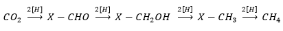
Суммарная реакция:

Кроме Н2 и СО2, многие метаногенные бактерии могут использовать для получения
энергии формиат, метанол, ацетат, а
также метилированные амины:
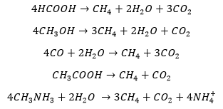
Ацетогенные бактерии восстанавливают карбонат до ацетата:
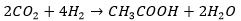
Фумаратное дыхание
Некоторые бактерии восстанавливают фумарат до сукцината
Брожение
При брожении образуется ATP, а его продукты могут быть и донорами и акцепторами электронов.
Существует несколько типов брожения:
Спиртовое брожение
Осуществляется дрожжами и некоторыми видами бактерий. Проходит в несколько этапов:
1. Превращение глюкозы в ПВК (см. гликолиз)
2. Превращение ПВК в ацетальдегид:
 3. Восстановление ацетальдегида:
3. Восстановление ацетальдегида:
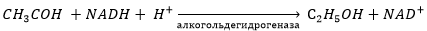
Суммарная реакция:

Гомоферментативное молочнокислое брожение
1. Превращение глюкозы в ПВК (см. гликолиз)
2. Превращение ПВК в молочную кислоту:
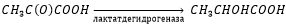
Суммарная реакция:
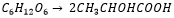
Гетероферментативное молочнокислое брожение
Идет согласно уравнению:
глюкоза -> молочная кислота + этанол + CO2

Пояснения:
1. Превращение глюкозы в глюкозо-6-фосфат происходит на этапе гликолиза (первая реакция) и катализируется ферментом гексокиназой (при этом молекла аденозинтрифосфата - ATP превращается в аденозиндифосфат - ADP). Обратную реакцию катализирует глюкозо-6-фосфатаза (при этом затрачивается молекула воды и получается неорганический фосфор).
2. Превращение глюкозо-6-фосфата в 6-фосфоглюконат происходит следующим образом: сначала из G-6-P образуется 6-фосфоглюконолактон (катализируется глюкозо-6-фосфатдегидрогеназой, при этом NADP+ становится NADPH), который затем при гидролизе и образует 6-фосфоглюконат (эта реакция катализируется 6-фосфоглюконолактоназой).
3. 6-фосфоглюконат превращается в рибулозо-5-фосфат путём дальнейшего окисления и отщепления углекислого газа с помощью 6-фосфоглюконатдегидрогеназы
4. Далее рибулозо-5-фосфат может изомеризоваться в ксилулозо-5-фосфат при помощи рибулозо-5-фосфат-3-эпимеразы
5. Ксилулозо-5-фосфат расщепляется на ацетальдегид и глицеральдегид-3-фосфат.
6. Глицеральдегид-3-фосфат присоединяет себе второй остаток фосфорной кислоты, превращаясь в 1,3-бисфосфоглицерат.
7. 1,3-бисфосфоглицерат отдаёт один остаток фосфорной кислоты ADP, превращая его в ATP. Реакция катализируется фосфоглицераткиназой при участии Mg2+
8. Образовавшийся 3-фосфоглицерат подвергается внутримолекулярному переносу фосфатной группы, превращаясь в 2-фосфоглицерат. Реакция легкообратима, протекает при участии Mg2+, кофактором также является 2,3-бисфосфоглицериновая кислота.
9. Енолаза в присутствии Mg2+ или Mn2+ превращает 2-фосфоглицерат в фосфоенолпируват. Енолаза ингибируется фторидом.
10. ФЕП фосфорилирует ADP и превращается в ПВК. Реакция протекает при наличии Mg2+ и ионов щелочных металлов.
11. Наконец, пируват превращается в лактат.
12. Образовавшийся ранее ацетилфосфат может либо превратиться в уксусную кислоту, либо в этанол.
Пропионовокислое брожение
Это сбраживание углеводов, которое приводит к получению пропионовой кислоты.
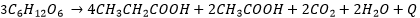
Муравьиннокислое брожение
Это сбраживание углеводов, которое приводит к получению муравьинной кислоты.
Масляннокислое брожение
Это сбраживание углеводов, которое приводит к получению маслянной кислоты.
Уксуснокислое брожение
Это сбраживание углеводов, которое приводит к получению уксусной кислоты.
Полезные материалы:
!!! Шлегель. Общая микробиология (главы 7-11) !!!
Мишустин. Микробиология (главы 7, 9)
Нетрусов. Микробиология (главы 6-8)
Гусев. Микробиология
Презентfция "Анаэробное дыхание"